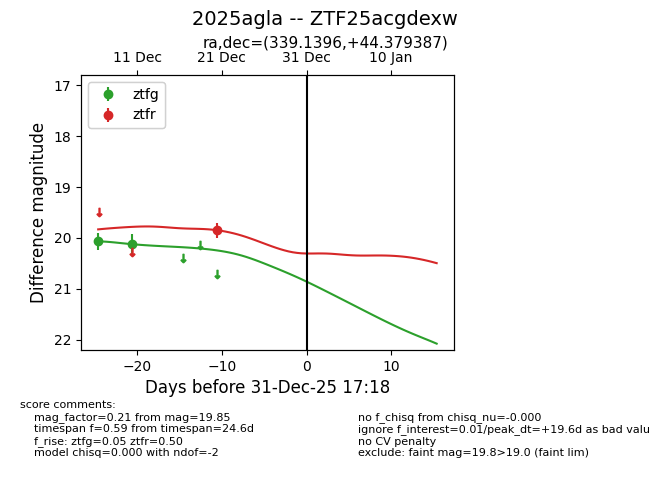
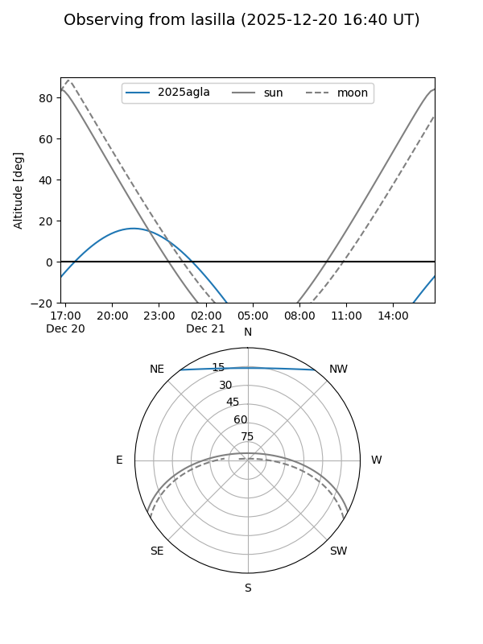
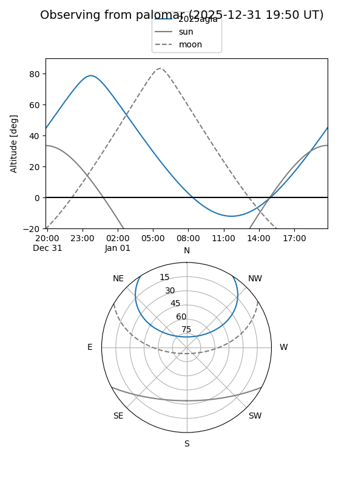

2025agla
Target 2025agla at 2025-12-31 16:59
Aliases and brokers:
FINK:
Lasair:
ALeRCE:
TNS:
YSE:
alt names
ZTF25acgdexw (ztf,fink_ztf)
2025agla (tns,yse)
Coordinates:
equatorial (ra, dec) = 339.1396,+44.37939
equatorial (HMS+DMS) = 22:36:33.51,+44:22:45.79
galactic (l, b) = (98.9887,-12.13188)
Flags:
Photometry:
last ztfg=20.12, ztfr=19.85
2 ztfg, 1 ztfr detections
Lightcurve

Visibility


Additional plots